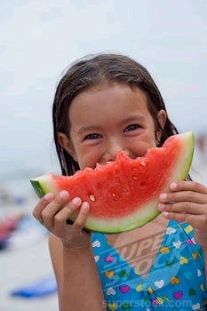
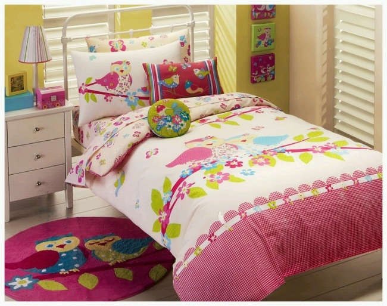

The final skill is that it is helpful to keep using your OPTIONS of
looking for GOOD things and looking for CALM things,
even if the situation gets tough and you don't feel like it.
This means to NEVER GIVE UP!
So this Program encourages you to Take Action:
to LOOK FOR GOOD
to LOOK FOR CALM
to use BOTH OPTIONS
and to NEVER GIVE UP trying to do this.
| |
 |  | |